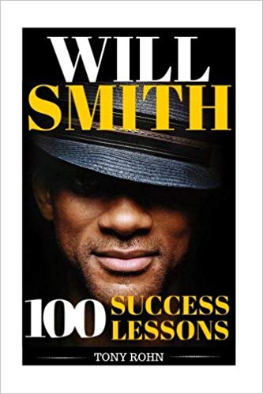
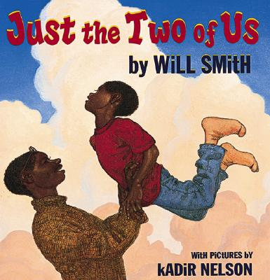

Featured

William Smothy
With supporting text below as a natural lead-in to additional content.
Published Books

Will Smith is Multi Talented, Intelligent, Funny And Driven. He represents "Possibility"!
Will Smith is the ultimate example of Determination & Hardwork. He reached great heights in
his Music & Acting career through sheer will and courage. Will Smith is an advocate of
Dreaming Big & Following Your Dreams. Learn the success secrets from Will Smith - the man
who attained great success in his endeavor and made himself an icon! If you want to be successful
in life or your career, you have to follow the path laid by successful people. Here is a list of 100
handpicked teachings of Will Smith that you can study, take to heart, follow and become a huge success!
What You'll Learn From This Book: Chapter 1: Why Should You Learn From Successful People? Chapter 2: How To
Copy Successful People & Become A Success? Chapter 3: Will Smith On Following Your Dreams Chapter 4: Will Smith
On Living Your Best Life Chapter 5: Will Smith On His Success Secrets Chapter 6: Will Smith On Hardwork,
Determination & Living An Inspirational Life Chapter 7:
How To Use This Book Effectively?
Will Smith: A Biography portrays Smith's West Philadelphia upbringing,
his arrival and ascent in Hollywood, and his family life with wife and fellow actor,
Jada Pinkett, and their children. It covers Smith's successes in three mediums: music,
where his partnership with childhood friend DJ Jazzy Jeff culminated in the first ever
Grammy for rap; the wildly popular television show, "The Fresh Prince of Bel Air;" and
his movie successes, from roles in blockbusters like Independence Day, Men in Black, and
I Am Legend, to critically acclaimed, award-winning performances in Ali and The Pursuit
of Happyness.
The book also details his increasing presence as a film producer.

Superstar Will Smith's touching ode to fatherhood.
Let the Scholastic Bookshelf be your guide through the whole range of your child's experiences--laugh with them, learn with them, read with them!
Category: Fathers and Sons
"Just the two of us
Building castles in the sky
Just the two of us,
You and I."
Will Smith--- musician, actor, and father--brings us a moving celebration of fatherhood. Smith's heartfelt lyrics and Kadir
Nelson's vibrant paintings capture the beauty and intensity of a father's love as his child grows from a boy into a man. This poignant portrait will resonate with fathers and sons everywhere.
These are the stories and adventures of a young African-American man named Deacon Foster,
a Detective who was chosen by God to speak His word boldly and courageously in the face of
opposition. God has given him strength and sight into the spiritual realm, to battle the
schemes and strategies of Satan, as well as battle the evil spirits that followed him and
were banished from heaven. Deacon is the voice of Biblical perspective on controversial
issues in today’s society. He exemplifies a man of godly character and integrity; and
will be an example of Jesus’ love and accountability. Deacon is in a battle against crime
in the city of Atlanta, but knows the influence behind it all is of evil spiritual origin.
On the opposite side of the spectrum we have Drexler Cohen, a powerful business owner with
political influence who is setting up the world to receive the Anti-Christ. He is behind
the chaos, violence, and crime throughout the world. So much so, that the world will seek
peace from anywhere. Cohen is essentially under the influence of an evil spirit who is
high ranking in Satan’s army of fallen angels. As Deacon wars against crime and evil spirits,
we also see aspects of his Christian walk in his personal life, his willingness to serve,
and his love and compassion for others.